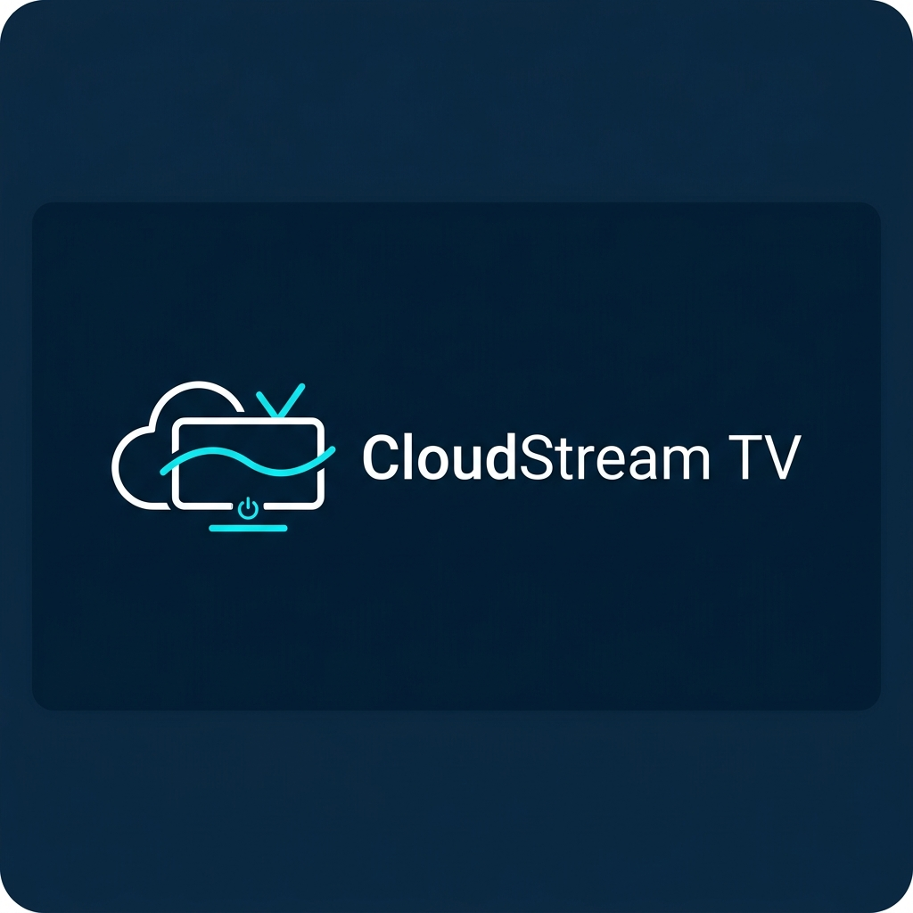

Connect your public or private Google Drive folders and start streaming videos, browsing photos, and running slideshows directly on your TV. No computer or phone casting required.

CloudStream TV is custom-engineered to deliver a smooth, high-fidelity experience optimized specifically for the Android TV Leanback interface.
Features a dual-mode engine. It can scrape public folders instantly without credentials, or use secure OAuth 2.0 device flow to load your private personal folders directly through Google API.
Integrated ExoPlayer supporting custom TV controls, play/pause toggles, 10s skip forward/backward, playback speed adjustments (0.5x to 2.0x), and screen aspect ratio scaling.
View images in full screen or launch automated, high-resolution slideshows with customizable slide transitions and intervals (3s, 5s, 10s, 15s) using remote control shortcuts.
A simple, secure connection setup designed to run entirely on your TV device without intermediate third-party servers.
Enter any Google Drive public folder URL/ID directly, or choose secure Google Sign-In. The TV displays a QR code which you scan using your phone/computer to authorize access safely.
The Kotlin client parses the Google Drive folder contents locally. It maps the subfolders, photo files, and video streams, caching folder information in secure local storage.
When you select a file, it starts streaming directly from Google servers to ExoPlayer. Files are never downloaded to local memory, ensuring lightweight operation.
Follow this step-by-step guide to transfer the downloaded APK from your Android phone directly to your TV using the **Send Files to TV** application.
Open the Google Play Store on both your **Android TV** and your **Android Phone**. Search for and install the free application **"Send Files to TV"** on both devices.
On your Android Phone, click on the **Download Release APK** button at the top of this website to download the `app-release.apk` file to your mobile downloads folder.
Open the **Send Files to TV** application on both devices. On your TV, select **Receive**. On your Phone, select **Send**, locate the downloaded `app-release.apk` file in your files, and select it. The file will transfer instantly over your local Wi-Fi.
Once the transfer completes, download a file manager app (such as *File Commander* or *FX File Explorer*) from the TV Play Store. Open the file manager, go to your TV's **Download** folder, click on the `app-release.apk` file, and install it. *(You may need to toggle 'Allow Unknown Sources' for the file manager when prompted).*